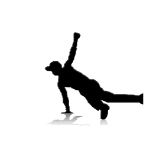

Toprock - dynamiczne kroki taneczne łączone z gestykulacją, tworzące wrażenie "mowy ciałem". Toprock jest wstępem do każdego wyjścia na parkiet. Aby dobrze wykonywać top-rock, trzeba przede wszystkim wykonywać go dynamicznie i jednocześnie w rytm muzyki, dobrze jest też umieć improwizować
Power moves – figury rotacyjne. Najefektowniejsza oraz najtrudniejsza część breakingu. Wymagają one dużej sprawności fizycznej ze względu na ich wysoce akrobatyczny charakter. Wymagają jednocześnie siły, gibkości, kondycji, poczucia ciała w przestrzeni oraz zaangażowania i szczególnie umiejętności samoasekuracji. Przede wszystkim jednak zaangażowania i dużo dłuższego treningu niż w przypadku innych elementów.
Freeze – figura statyczna, polegająca na "zastygnięciu" w konkretnej pozycji na kilka sekund
Drop (Go down) – przejścia z toprocka do footworka/powermove, ważne kroki pozwalające zachować ciągłość taneczną
Footwork – kroki taneczne, najczęściej wykonywane z pozycji przysiadu podpartego. Aby dobrze wykonywać zarówno footwork jak i inne figury, trzeba wypracować flow czyli płynność ruchów. Słowem – nie wystarczy nauczyć się konkretnego ruchu, aby go dobrze wykonywać, należy jeszcze wykonywać go płynnie i bardzo dynamicznie.
Nieodłącznym elementem kultury b-boyingu są specyficzne formy rywalizacji w tańcu. Klasyczne pokazy solowe lub grupowe oceniane przez sędziów, tak charakterystyczne dla wszystkich tańców nowoczesnych, w breakdance odchodzą powoli do lamusa.
Określana też jako „batelka” (od ang. battle), lub „kontest”. Naprzeciw siebie stają dwaj tancerze, lub dwie grupy i starają się nawzajem „pokonać” w wykonywanych ruchach. Liczy się zarówno technika, jak i wyczucie rytmu oraz własny styl. Przeciwnicy często wchodzą ze sobą w specyficzną interakcję gestów – ruchami ciała, rąk i twarzy okazują sobie nawzajem wyższość, prześmiewczość, lekceważenie, a w skrajnych przypadkach nawet pogardę i gesty obraźliwe, jednak najważniejsza zasada bitwy brzmi: nie wolno dotknąć przeciwnika. Bitwę może oceniać sędzia lub publiczność. Często wygrana nie zależy od rzeczywistych umiejętności, lecz od odpowiedniego zaprezentowania się i improwizacji, a co za tym idzie zdobycia sympatii publiki oraz sędziów.
Kółeczko (ang. cypher) to bardziej forma tanecznego wyładowania, niż rywalizacji pomiędzy tancerzami. Tworzą oni kółko, a na jego środek wychodzi każdy, kto chce wyjść i prezentować swoje umiejętności. Jeśli ktoś czuje się w kółeczku dość pewnie, może wybrać sobie przeciwnika i gestami dać mu do zrozumienia, że chce bitwy – wtedy pozostali tancerze zamieniają się w publiczność, która bitwę ocenia.
Często na zawodach organizowane są tzw. kontesty – bitwy ograniczone do jednego elementu (np. toprock contest, footwork contest, powermove contest itd.) lub danej płci lub grupy wiekowej tancerzy (b-girl contest, kid contest itp.).